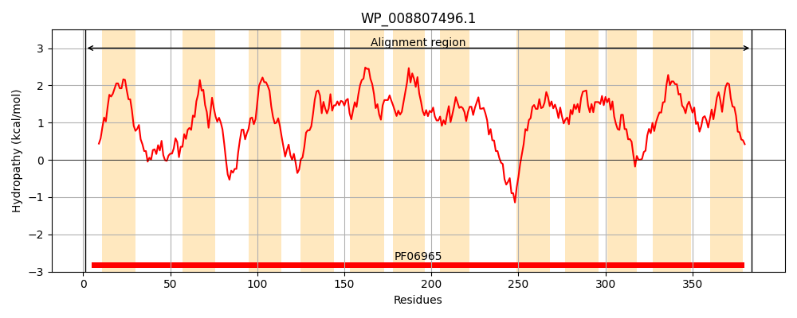
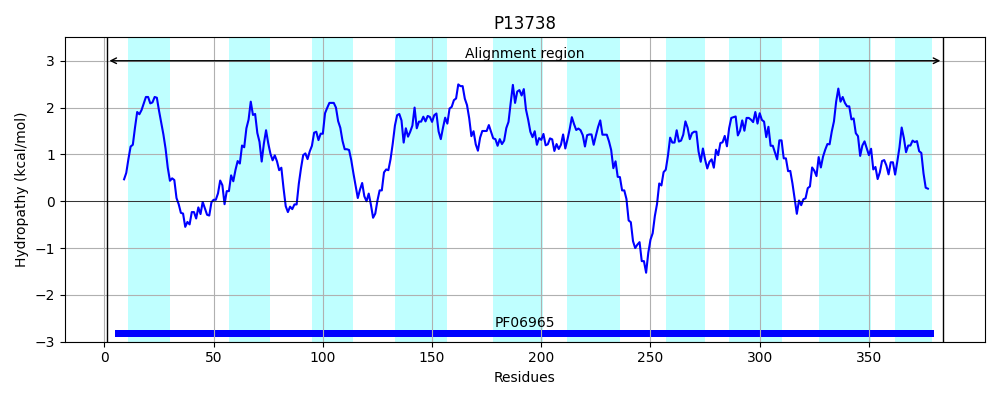
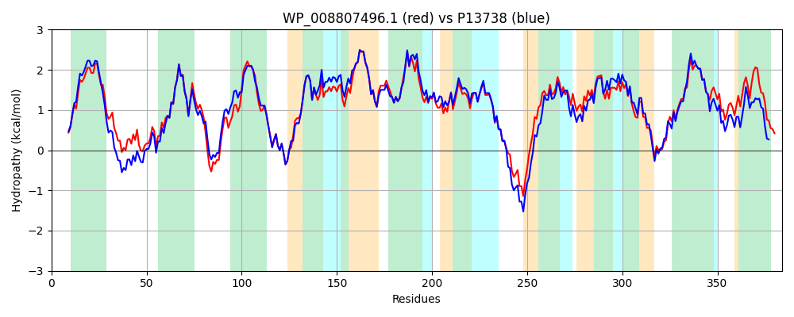

Hit Accession: P13738
Hit TCID: 2.A.33.1.1
Hit Description: gnl|BL_ORD_ID|9112 gnl|TC-DB|P13738|2.A.33.1.1 NA(+)/H(+) ANTIPORTER 1 (SODIUM/PROTON ANTIPORTER 1) - Escherichia coli.
Mach Len: 384
e:0.000000
Query TMS Count : 12
Hit TMS Count: 10
TMS-Overlap Score: 9.050000
Predicted Substrates:CHEBI:9175;sodium(1+), CHEBI:24636;proton
BLAST Alignment:
Score: 1654 , Bit scores: 641 bits, E-value: 0.0e+00, Alignment length: 384, Percentage identity: 85
Query: 1 MKHLQRFFSSDASGGIVLIIAAALAMVMANTSVTSGLYHSFLETPVQLRVGALEINKNMLLWINDALMAVFFLLIGLEVKRELIQGSLASRRQAVFPVIAALGGMIVPALVYLAFNAQDPVAREGWAIPAATDIAFALGVLALLGSRVPTALKIFLMALAIIDDLGAIVIIALFYTHDLSMLSLGVAAAAIAVLVALNLSGVRRTGIYILVGAVLWTAVLKSGVHATLAGVIVGFMIPLEEKHGKSPAKALEHVLHPWVAFMILPLFAFANAGVSLQGVTLAGLTSLLPLGIMAGLFIGKPLGISLFCWLALKLKWASLPEGTTCKQIMAVGILCGIGFTMSIFIATLAFGSVDPALINWAKLGILIGSVLSAVIGYLILRQRV 384
MKHL RFFSSDASGGI+LIIAA LAM+MAN+ TSG YH FLETPVQLRVG+LEINKNMLLWINDALMAVFFLL+GLEVKREL+QGSLAS RQA FPVIAA+GGMIVPAL+YLAFN DP+ REGWAIPAATDIAFALGVLALLGSRVP ALKIFLMALAIIDDLGAI+IIALFYT+DLSM SLGVAA AIAVL LNL G RRTG+YILVG VLWTAVLKSGVHATLAGVIVGF IPL+EKHG+SPAK LEHVLHPWVA++ILPLFAFANAGVSLQGVTL GLTS+LPLGI+AGL IGKPLGISLFCWLAL+LK A LPEGTT +QIM VGILCGIGFTMSIFIA+LAFGSVDP LINWAKLGIL+GS+ SAVIGY LR R+
Sbjct: 1 MKHLHRFFSSDASGGIILIIAAILAMIMANSGATSGWYHDFLETPVQLRVGSLEINKNMLLWINDALMAVFFLLVGLEVKRELMQGSLASLRQAAFPVIAAIGGMIVPALLYLAFNYADPITREGWAIPAATDIAFALGVLALLGSRVPLALKIFLMALAIIDDLGAIIIIALFYTNDLSMASLGVAAVAIAVLAVLNLCGARRTGVYILVGVVLWTAVLKSGVHATLAGVIVGFFIPLKEKHGRSPAKRLEHVLHPWVAYLILPLFAFANAGVSLQGVTLDGLTSILPLGIIAGLLIGKPLGISLFCWLALRLKLAHLPEGTTYQQIMVVGILCGIGFTMSIFIASLAFGSVDPELINWAKLGILVGSISSAVIGYSWLRVRL 384 | Protein Hydropathy Plots: |
|---|
|  |  |
Pairwise Alignment-Hydropathy Plot:
|
|---|
|  |